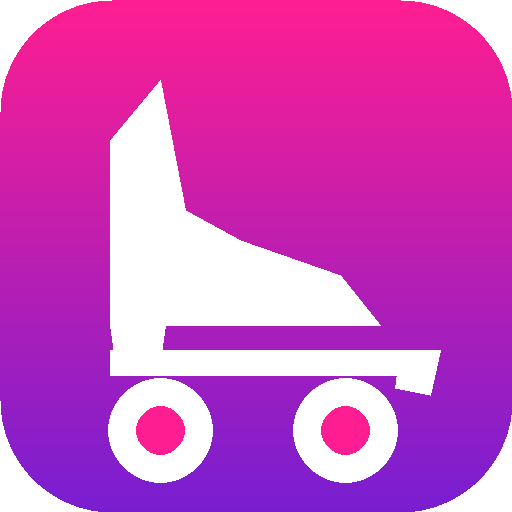
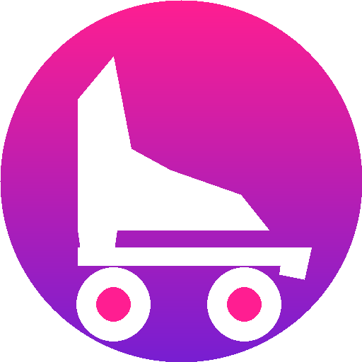
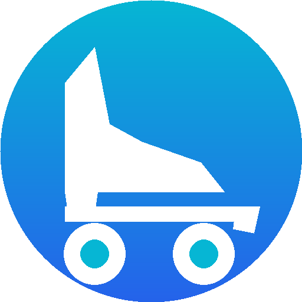
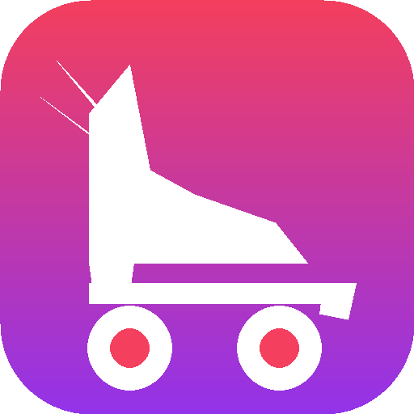
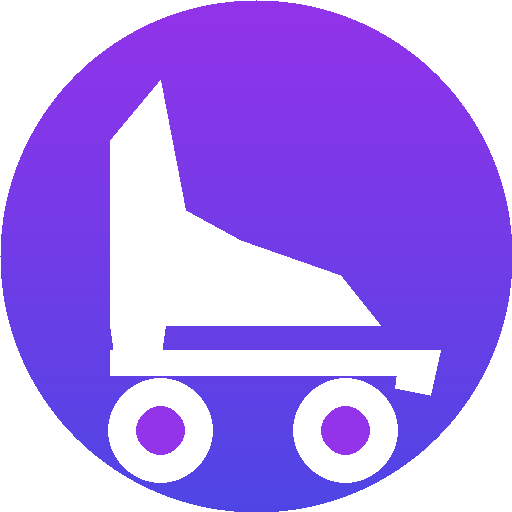

Dejamos atrás las letras rígidas y los colores rojo/negro/blanco. Diseñado con la identidad genuina del patinaje sobre ruedas: la bota tradicional de 4 ruedas con freno y colores vivos deportivos (fucsia, violeta, turquesa).

Bota clásica de patinaje artístico con taco, plancha, 4 ruedas y freno delantero. Fondo degradé de Fucsia a Violeta (los colores de maillot y tokens de patín). Inconfundible: cualquiera que lo mire sabe que es patín.

El mismo patín artístico sobre un disco circular en degradé fucsia a violeta. Formato redondeado ideal para perfiles y aplicaciones web deportivas.

Bota de patín en blanco sobre fondo turquesa / azul cian. Colores frescos y modernos que contrastan con fuerza y elegancia tanto en fondos claros como oscuros.

La bota tradicional de patín artístico combinada con una pequeña ala deportiva en el tobillo. Une directamente el patinaje con el nombre del club (Wings).

Bota de patín artístico sobre un disco en violeta / púrpura profundo. Muy estético, con excelente contraste en pantallas claras y oscuras.
Al hacer clic en cualquier botón de prueba arriba, estas dos ventanas se actualizan al instante: